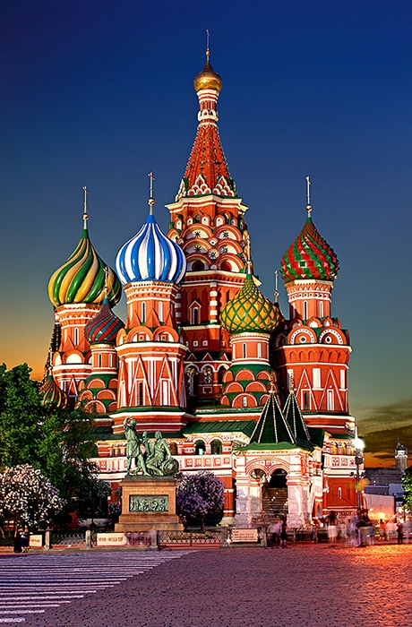
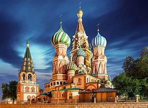
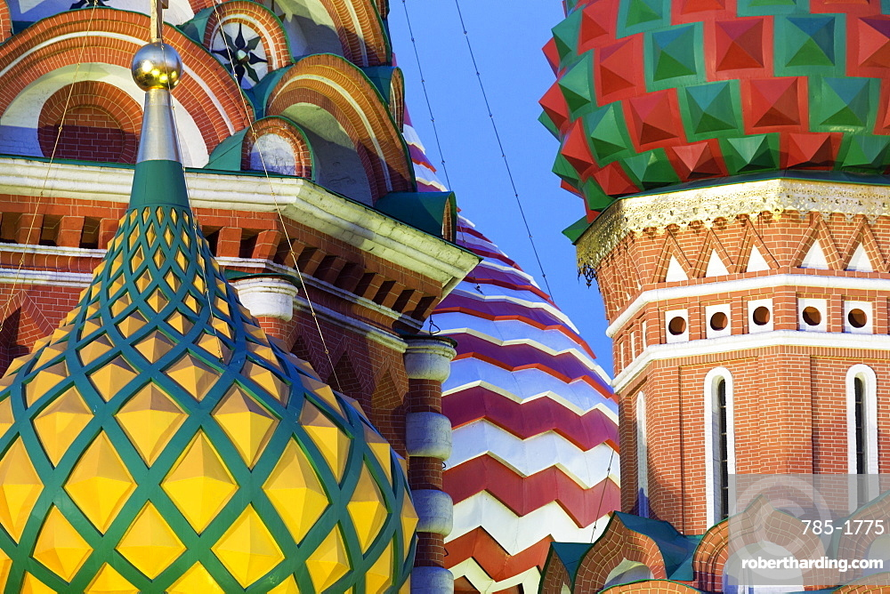
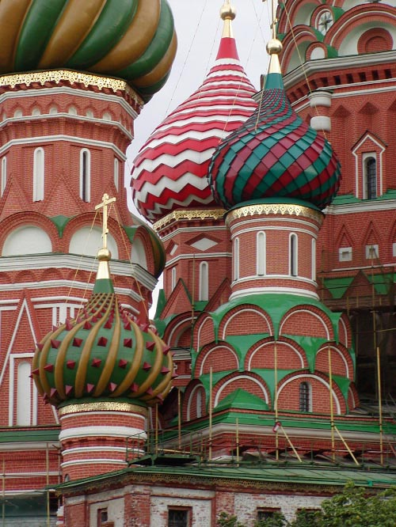
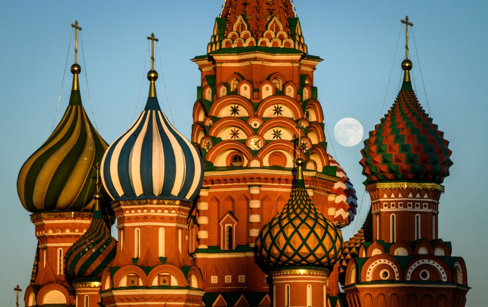

Saint Basil's Cathedral, officially the Cathedral of Vasily the Blessed, stands at the southern end of Red Square in Moscow. Built between 1555 and 1561 by order of Tsar Ivan the Terrible, it is one of Russia's most iconic landmarks and a UNESCO World Heritage Site, instantly recognizable by its colorful onion-shaped domes that have come to symbolize Russia itself.
Ivan the Terrible commissioned the cathedral to commemorate the capture of the Tatar stronghold of Kazan in 1552. According to legend, the tsar had the architects blinded after completion so they could never create anything more beautiful. The cathedral was named after Vasily the Blessed, a holy fool revered by Ivan himself, who was later buried within the structure.
The cathedral consists of nine individual chapels arranged around a central tower, each dedicated to a saint on whose feast day a key battle was won. Its distinctive multicolored domes were added in the 16th and 17th centuries, each uniquely patterned. The overall design has no parallel in Russian or Byzantine architecture, blending elements of medieval Russian tent-style churches with Eastern and Western influences.
Though no longer an active Orthodox church, Saint Basil's functions as a branch of the State Historical Museum. It hosts regular exhibitions on Russian religious art and history. The cathedral's location on Red Square — alongside the Kremlin and Lenin's Mausoleum — makes it the spiritual and symbolic heart of Moscow, welcoming millions of visitors each year.


